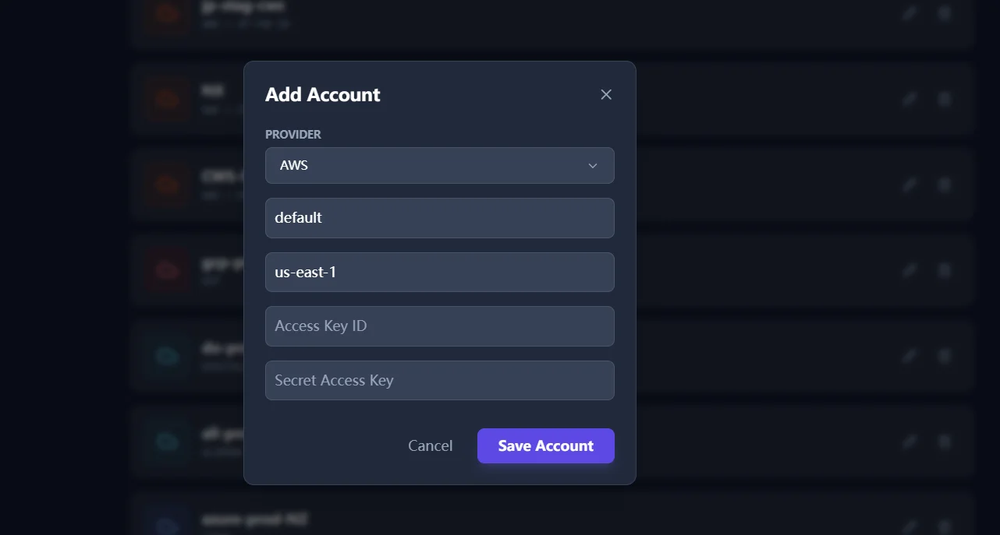
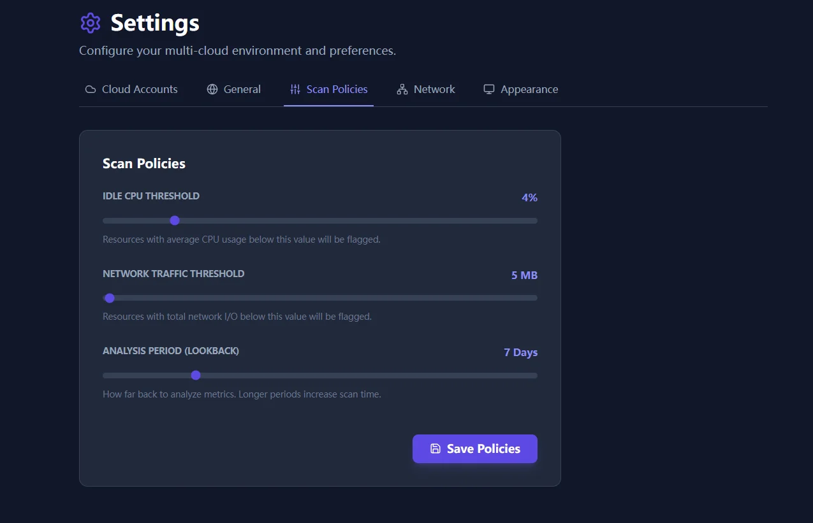
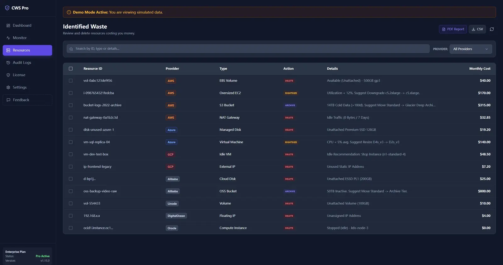
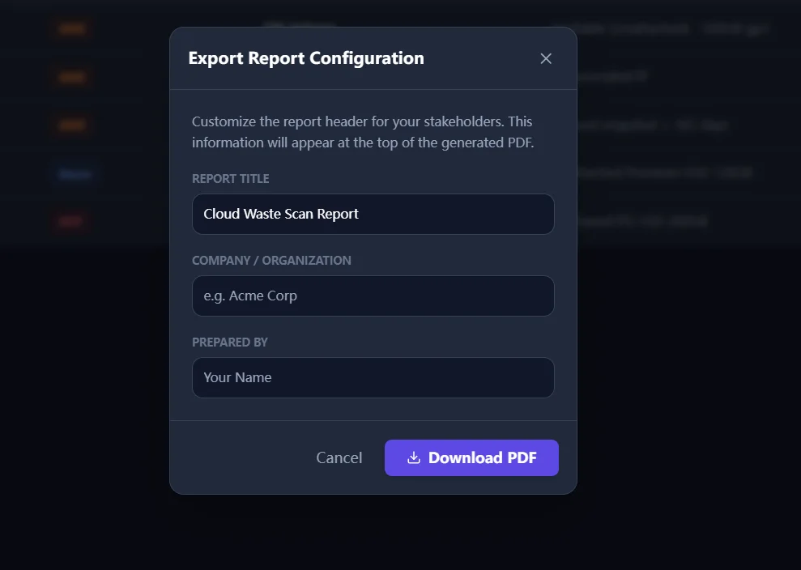

Quick Start and Setup Guide
This guide is organized to get you from install to first useful findings quickly, then help you tighten setup for recurring review.
Fast path
Most teams can install, connect one account, and review the first meaningful waste findings in about 15 minutes. Start with read-only access and use demo mode if you want to preview the workflow first.
15-Minute First Scan Path
0-5 min
Install locally
Download the package for your platform and open the app. Use the download center if you need checksums or pinned files.
5-10 min
Connect one account
Add one provider with read-only access first. This is the fastest safe way to confirm whether the product finds actionable waste in your environment.
10-15 min
Review and share
Run the scan, review the highest-confidence findings, and export or share the result before deciding whether to broaden usage.
Installation
Cloud Waste Scanner is a standalone desktop application. It does not require agents on your servers, so the quickest path is to install locally and run one read-only scan.
Use the download center if you need pinned package links, SHA256 values, or OS-specific install guidance.
Activation
If you are evaluating the product, start with demo mode or the smallest paid plan that matches your certainty. If you are using a paid plan, enter the license key sent to your email. If you have lost your key, use the Recovery Tool.
Provider Setup Guide
Go to Settings > Cloud Accounts and click "Add Account". For the fastest safe start, connect one account with read-only access first, then expand only after the initial findings are useful.

AWS Configuration
Required Credentials:
Access Key IDSecret Access KeyDefault Region(e.g., us-east-1)
Recommended IAM Policy (ReadOnly):
arn:aws:iam::aws:policy/ReadOnlyAccessIf you want to use the Cleanup feature, you will need to add explicit permissions like ec2:DeleteVolume, ec2:ReleaseAddress, etc.
Azure Configuration
Required Credentials (Service Principal):
Subscription IDTenant IDClient ID(Application ID)Client Secret
Role Assignment: Assign the Reader role to the Service Principal at the Subscription level for scanning. Assign Contributor if you wish to use cleanup features.
Google Cloud Configuration
Required Credentials:
Service Account JSON Key(Paste the full content)
Required APIs: Compute Engine API, Cloud Monitoring API.
Alibaba Cloud
Required Credentials:
AccessKey IDAccessKey SecretRegion ID(e.g., cn-hangzhou)
DigitalOcean
Required Credentials:
Personal Access Token(Read Scope for scanning, Write Scope for cleanup)
Cloudflare
Scans for unused DNS records, inactive Workers, and R2 buckets.
Required Credentials:
API Token(Template: Read all resources)Account ID(Found in the dashboard URL or Overview)
Vultr
Required Credentials:
API Key
Scan Policies
Customize what "Idle" means for your organization under Settings > Scan Policies.

- Idle CPU Threshold (1-20%): Instances below this average CPU usage are flagged.
- Network Threshold (1-1000MB): Instances with total network I/O below this limit are flagged.
- Lookback Period (1-30 Days): How far back to analyze metrics. Setting this to 30 days provides higher confidence but slower scans.
Network & Proxy
Supports HTTP/HTTPS and SOCKS5 proxies for corporate environments.

Running Scans
- Navigate to the Monitor tab.
- Click the Refresh/Scan icon in the top right.
- Wait for the progress bar. Results are aggregated from all connected providers.

Cleanup & Safety
1. Go to the Resources tab to view the list of wasted resources.
2. Select the items you want to delete using the checkboxes.
3. Click the red "Clean Up" button in the floating bar.
Safety Check: The app will double-check the status of the resource before attempting deletion to prevent race conditions.
Reporting
Click "PDF Report" on the Resources screen to generate a professional summary.
